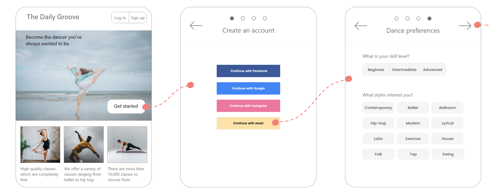

THE PROBLEM
I decided to explore the issues within the dance community. From my personal experience I know that dance classes are very expensive, costing around $20-$100 per class. There is also a judgemental and elitist atmosphere within these classes, especially for beginners. Classes are also inaccessible and difficult to find for some users with varying dance experience and dance styles.
RESEARCH GOALS
The main research goals include:
- Evaluate the current habits and needs of potential users
- Determine the major pain points of existing online classes
- Identify the major competitiors and their main features
RESEARCH HIGHLIGHTS
"For classes I am familiar with, I prefer to go in because it is more of a community. But when I am learning new styles I like following along in my own space at my own pace" - Emily, 23 F
It was also found that:
- There is a lack of social interaction in current online classes
- Experienced dancers generally preferred in person classes
- Beginners preferred online classes so that they could move at their own pace
- Existing apps lack variety in dance styles and have a low volume of videos
PROBLEM STATEMENT:
Dancers need a way to discover and access classes to maintain social and physical health
HYPOTHESIS:
We believe that by creating a platform where dancers can share and view dance classes, we will create a more inclusive dance community.
PERSONA
USER FLOWS
The log in and sign up process:
Applying filters to a search:
SITE MAP

FEATURE PRIORITISATION
This is the prioritisation of features for the development of the Minimal Viable Product. The user profile and social media features to address the main issues with social interaction as highlighted in my user research. Search filters and dance preferences help users discover relevant content to make classes more accessible. The remaining features are important, but not necessary for the MVP.
INITIAL SCREEN DESIGN
The first step in my design was developing the navigation system. For mobile apps the navigation will be outlined within a hamburger menu as this is an intuitive icon for many users. On larger screens the menu items will be displayed across the top of the screen in a navigation bar.
FIRST PROTOTYPE
USER FEEDBACK
Log in and Sign up Process:
- "Next and "Skip" buttons were hard to differentiate
- "Back" button was looked over
- Social media buttons were clunky
- Users preferred to log in with social media because it is quicker
Searching and Filtering Process:
- The "Filter" button was overlooked
- The search bar was not noticed by older users because the text was too light
- Users wanted a sorting option to sort search results
- Most users selected the search bar before the "Filter" button
FINAL PROTOTYPE


RESPONSIVE DESIGN
The ideal layout for my design would be on laptop due to the nature of the app. Laptop would be easier to view and follow classes. However, the design is responsive to various breakpoints as you can see below.